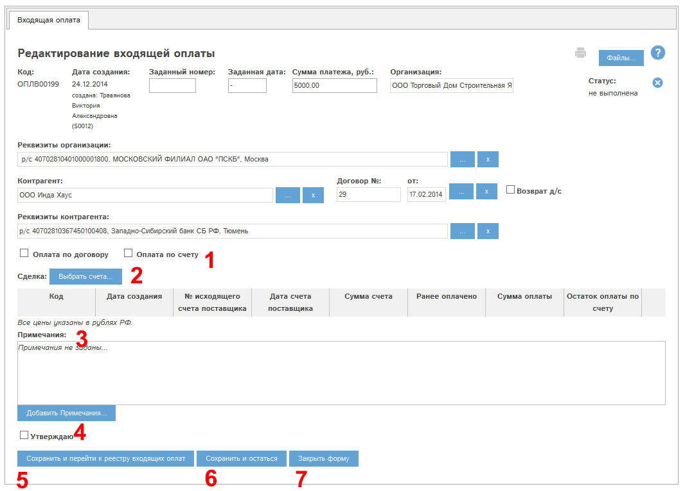
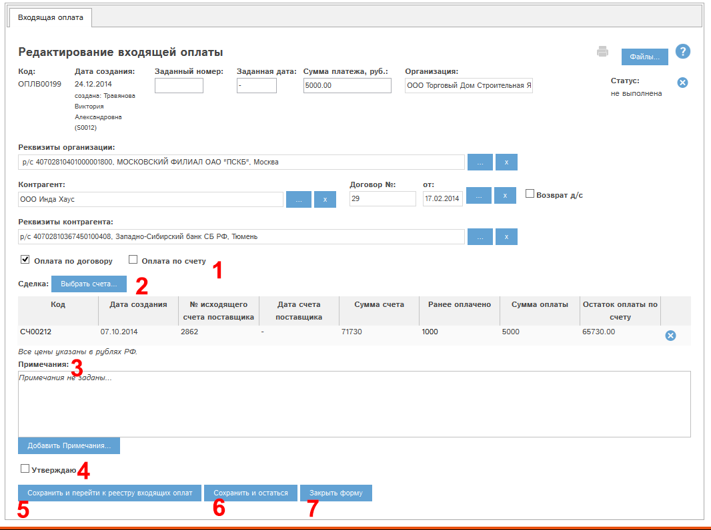
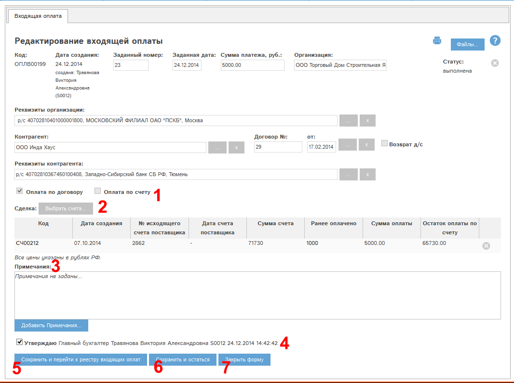
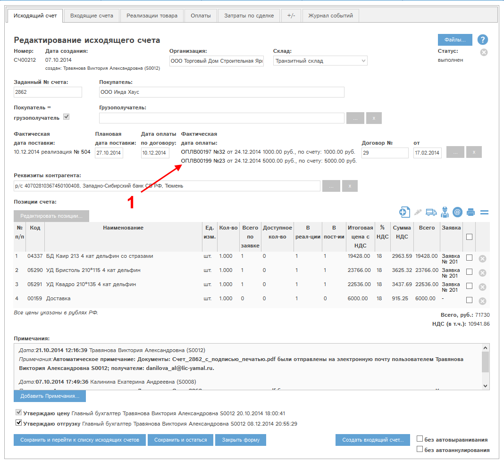

Рис. 5.52 Окно просмотра/редактирования входящей оплаты
Рассмотрим блоки окна редактирования оплаты.
Блок «статус» – на Рис. 5.52 имеет значение «не выполнена». У каждой оплаты в данном блоке указан ее статус.
Статус оплаты меняется следующим образом:
- Оплату создали, но не утвердили – статус «не выполнена».
- Оплату утвердили – статус «выполнена».
- Аннулировали оплату (только из статуса «не выполнена») – статус «Аннулирована».
Блок «Вид оплаты» (2).
- Оплата по договору. При выборе данного режима сумма оплаты распределяется автоматически по самым старым неоплаченным исходящим счетам заданного контрагента. Платежи по найденным счетам можно редактировать с помощью кнопки «Выбрать счета…».
- Оплата по счету. При выборе данного режима сумма оплаты расходуется на оплату самого старого неоплаченного исходящего счета контрагента. Выбрать другой счет для оплаты можно с помощью кнопки «Выбрать счета…».
Не привязанный к счетам остаток оплаты будет зачислен как авансовый платеж по карте контрагента. При утверждении цен нового исходящего счета данного контрагента будет предложено привязать авансовый платеж к счету.
Выберем режим «Оплата по договору». Сумма оплаты будет автоматически распределена по неоплаченным счетам поставщика:

Рис. 5.53 Окно просмотра/редактирования оплаты. Режим «оплата по договору».
Блок (3) – Примечания полностью аналогичен блоку «Примечания» в разделе Просмотр и редактирование заявки.
Утверждение оплаты (4) – при наличии у Вас прав Вы можете утвердить оплату.
Для этого необходимо проставить этот флаг и нажать кнопку «Сохранить и остаться» (4).
Для утверждения оплаты необходимо заполнить поля «Заданная дата» и «Заданный номер».
Данное действие так же возможно провести при наличии прав из реестра входящих оплат. Для этого служит кнопка «утвердить» в колонке «Утверждение».
При утверждении оплата переходит в статус «Выполнена».
Редактирование оплаты в статусе «Выполнена» невозможно!
Для редактирования оплаты необходимо снять утверждение!
Оплату из нашего примера утвердили. Окно просмотра входящей оплаты выглядит следующим образом:

Рис. 5.54 Окно просмотра/редактирования входящей оплаты после утверждения.
Становится доступной кнопка  - печать оплаты.
- печать оплаты.
Проверим связанный с оплатой исходящий счет. Для этого кликнем в таблице «Сделка» по коду счета. Откроется карта счета:

Рис. 5.55 Карта счета с привязанной оплатой.
Оплата прикрепилась к карте счета (1).